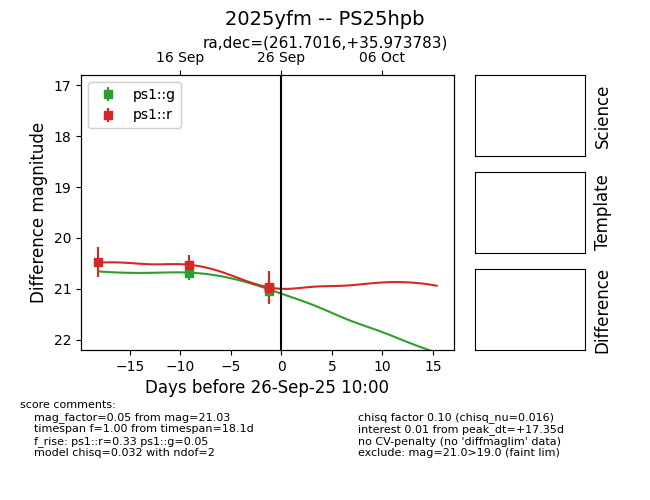
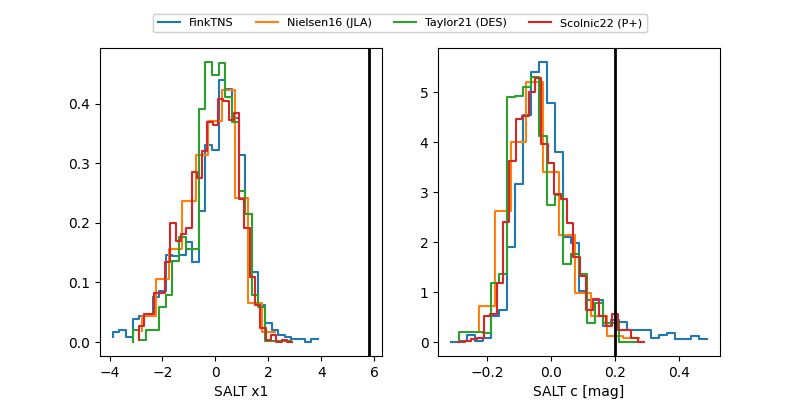

TNS: 2025yfm
YSE: 2025yfm
2025yfm (yse,tns)
PS25hpb (panstarrs)
equatorial (ra, dec) = (261.7016,+35.97378)
galactic (l, b) = (60.2350,+31.85830)


last ps1::g=21.03, ps1::r=20.97
3 ps1::g, 4 ps1::r detections